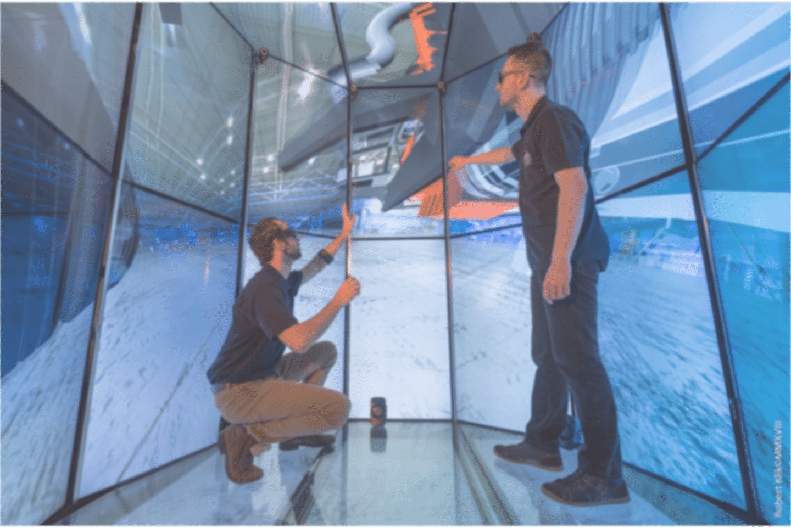

LIRKIS (Laboratórium Inteligentných Rozhraní Komunikačných a
Informačných Systémov) predstavuje excelentné pracovisko určené
na výskum, vývoj a výučbu v oblasti aplikácií paralelných,
distribuovaných a sieťových počítačových systémov na riešenie
výpočtových procesov v oblasti spracovania grafických údajov a
virtuálnej reality s primárnou orientáciou na inteligentné
rozhrania informačných systémov vrátane tvorby sieťových
komunikačných prostredí umožňujúcich prehľadávanie a kvalitné
sprístupnenie distribuovaných multimediálnych zdrojov (skladov
znalosti) a služieb a ich využívanie pri tvorbe a doručovaní
nových znalostí vrátane vývoja koncepcie on-line platforiem pre
prístup k multimediálneho obsahu. Je súčasťou Katedry počítačov
a informatiky, FEI TU v Košiciach. Zvláštna pozornosť je
venovaná výskumu a vývoju nových flexibilných a inteligentných
rozhraní systémov na báze technológií virtuálnej reality určené
na práce v oblastiach:
systémov snímania resp. tvorby vstupných dát (tracking systémy,
3D skenovanie, modelovanie, simulácia)
vizualizačných jadier pre zobrazovanie výstupov v rôznych
formách a zároveň riadených vyššoúrovňovým jazykom pre ľahšiu
manipuláciu s objektmi, vrátane skriptovej manipulácie
Inteligentného robustného databázového systému na ukladanie
rozsiahlych informácií a dát (grafických i negrafických)
paralelných resp. distribuovaných alebo sieťových
implementačných prostredí systémov